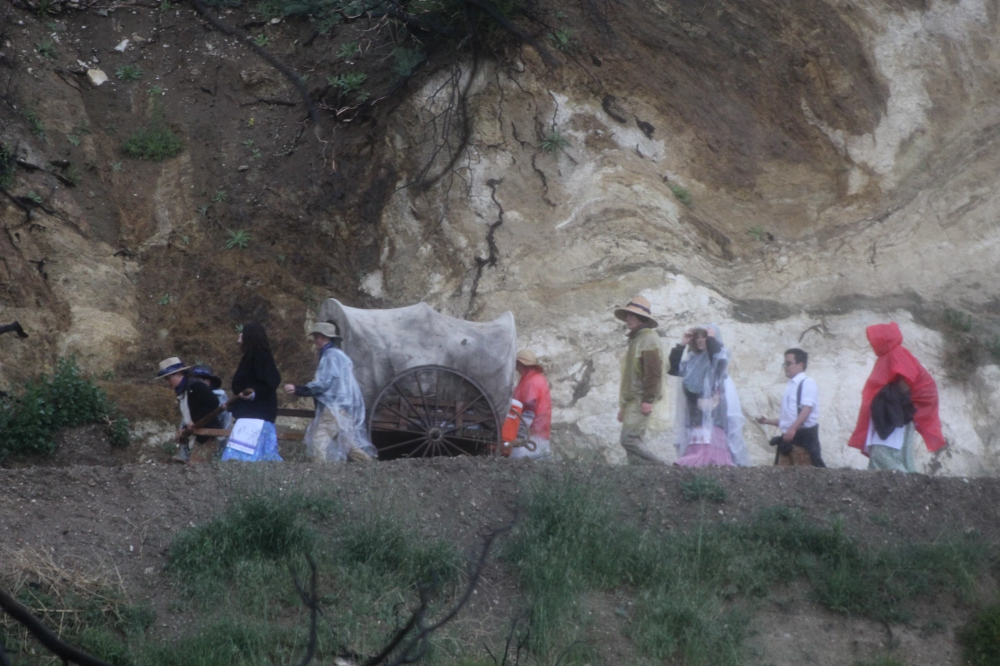
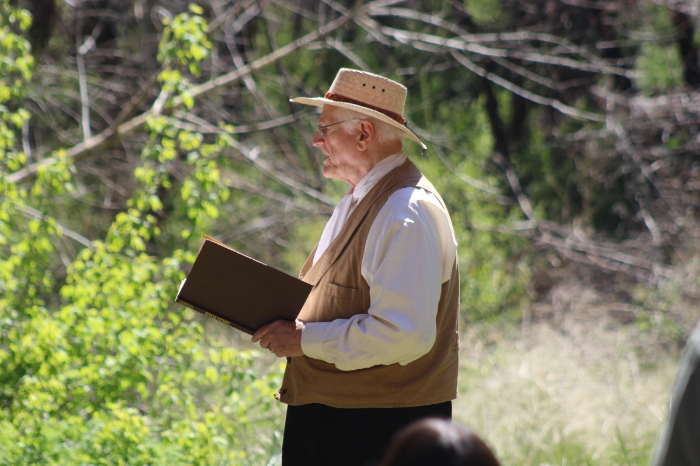
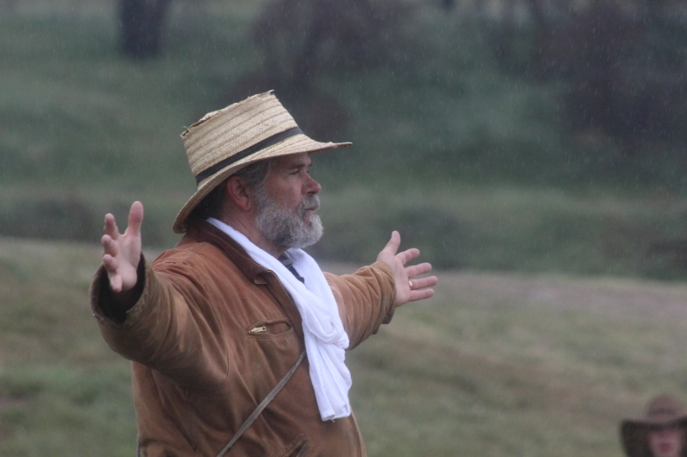

The stories on this page are the stories that were told to the youth
on this trek. You can see a lot more stories not covered on this page
in a 33 page PDF called "
Selected Handcart Stories for Youth Treks
"
James Kirkwood - Willie Handcart Company
Let me tell you of James Kirkwood. James was from Glasgow, Scotland.
On the trip west, James was accompanied by his widowed mother and
three brothers, one of whom, Thomas, was 19 and crippled and had to
ride in the handcart. James's primary responsibility on the trek was
to care for his little four-year-old brother, Joseph, while his
mother and oldest brother, Robert, pulled the cart. As they climbed
Rocky Ridge, it was snowing and there was a bitter cold wind
blowing. It took the whole company 27 hours to travel 15 miles. When
little Joseph became too weary to walk, James, the older brother,
had no choice but to carry him. Left behind the main group, James
and Joseph made their way slowly to camp. When the two finally
arrived at the fireside, James, “having so faithfully carried out
his task, collapsed and died from exposure and over-exertion.”
Latter in life Joseph asked this question about his brother "What
would you do for your older brother that gave his life so you could
live?

1855 (age 23), McFarland, Archibald
I was born on the 17th of December 1832 in the village of Sinclair
Town in the parish of Dyart Fifeshire, Scotland. My father's name
was William McFarland and my mother's name was Margaret McCormick.
My father was twice married, my mother being his second wife; his
first wife's name being Catherine Boyd. She bore my father two
children. One died when he was quite young, and my other brother,
whose name was Charles, enlisted in the British Army when he was
eighteen and I was a boy of eight years. There were ten years
difference in our ages. He went to India and died there in the year
1852. He was born on April 23, 1823.
My father's first wife was a widow when he married her. She had one
daughter whose name was Elizabeth McDonald. She was born in 1818 and
died when I was about fifteen years of age. She left three children,
two girls and a boy.
To America
After I got married, I commenced the most eventful period of my
life, for I, with all my father's family started to the gathering
place of the people of God in Utah. We left Liverpool, or I should
have said we were going to leave Liverpool on the ship Helious, but
after we embarked and had been on board two nights during a storm
she broke loose from her anchor in the river and ran aground, and
the government officers would not let her go to sea until she had
been inspected on the dry docks, so we were put ashore again, and
had to stay one month. She was advertised to sail on December 20,
1854, but we didn't get to sail until sometime in January 1855. We
then sailed on a ship called the Charles Buck, and as there was some
dispute between our shipping agent, Franklin D. Richards and the
captain of the Helious, we did not get the provisions that were
provided for us, and the consequence was that before we got half
over the sea our provisions began to run short, and we had rather a
hard time. Needless to say, we were greatly blessed of the Lord in
our journey and arrived all safe in New Orleans on March 5, 1855,
and from here we took a steamer to St. Louis up the Mississippi
River. We were eleven days on the river between New Orleans and St.
Louis. We stayed here some eight days and met some of our old
friends who were very kind. I will just mention some of their names.
Foremost among them was Alexander Dow, who has since come to Utah,
apostatized and gone back. James and Thomas Adamson from the
Boreland who were very kind. James never came to Utah, but Thomas
gathered that same year and is now a faithful man of God. From St.
Louis we took a steamboat for Atcheson, Kansas. We were nine days on
this journey. There were then but few inhabitants in this part of
the west only three houses in the town. We moved out some six miles
from the river and took up a section of land. That is to say, the
brethren who were in charge of the emigration for that year, and we
emigrants commenced to build houses, fence and plow the land.
The Trek
We stayed here until July 2nd when we organized into a company with
Richard Ballantyne as captain. While we were camped here cholera
broke out in the camp, but through the blessings of the Lord not
many died. There were eleven persons to each wagon to travel across
the plains, and there being nine of our own family there were only
two other persons traveling in our wagon. The cattle and wagons
belonged to the P Emigrating Company and the emigrants paid so much
for their use. Our wagon contained my father and mother, myself and
wife, I being the only married one at the time, my brothers James,
William and Robert and sisters Mary Ann and Janet, a young woman
named Jane Pilkinstin and a motherless girl named Eliza Pinder. Our
traveling from the Missouri River with the exception of the wagon
tracks that former companies had made, was a trackless desert. We
saw the first herd of buffalo the second day after we started, and
if I remember right, killed one the third day. We would average
about fifteen miles per day, and we saw herds of buffalo and deer
almost every day, and when we got on the Platte River the whole
country seemed alive with them. We killed what we wanted for use but
never wantonly destroyed any. Our journey across the plains and
through the mountains was very laborious and wearying, and I have
many times thought there was no comparison between us and ancient
Israel, for with them the Lord preserved their shoes and clothes,
but with us when we arrived in the valley of Salt Lake most of our
clothes were worn out and our shoes worn off our feet.
Salt Lake Valley
We arrived in the Valley on September 25, 1855, almost worn out but
we were full of hope and full of the spirit of our Holy religion. In
coming across the plains we had two of the sisters shot, and both
died. The one was shot through the carelessness of a young man in
handling a gun around camp while a band of Indians were around. Her
name was Palmer. The other was shot when her husband, who had been
hunting, brought in his gun and threw it down on the bed in the
wagon, and when she went to make the bed she pulled the gun out by
the barrel, and it went off. The shot lodged in her shoulder. We did
not expect to see anyone we had been acquainted with, but Brother
John Bowen was looking out for us, and took us to his house and
treated us with great kindness. We stayed several days with him. I
went to work for a man named Alexander Wright, but as I thought he
wanted to impose upon me I left him and went to work for John Sharp
in quarrying and making a canal for the Church. I worked for him one
year for the sum of $150.00 and our board, but as I was married he
paid me double or $300.00 and board for myself and wife. During the
winter and spring we suffered considerably for want of food as there
was not much in the country. The grasshoppers ate up almost
everything the summer previous. My wife especially suffered as she
was then carrying her first child and could not eat everything that
came along, as I could. There were weeks she hardly ever tasted
bread. I must say that through it all we were greatly blessed by the
Lord for I never felt like complaining, and the spirit of the Lord
bore me up and I felt to rejoice that I Was gathered among the
people of God and had the privilege to help to build up Zion in the
last days.
There was a man, a neighbor from almost the same place in Scotland
that we were from, I will not tell his name, who got to grumbling
and complaining. He had more to eat than we had and did very little
work. He never quit grumbling, but apostatized and took his whole
family out of the Church. My brothers and I, out of our small wages,
saved enough to buy us a new wagon and yoke of steer calves. The
population of Salt Lake City was then about four or five thousand.
The house where I lived was in the Twentieth Ward of the city. There
were only a few houses, and women and children would come up there
from the lower wards of the city in the spring to dig segos and eat
them. There was also a thistle that grew in the lower parts of the
city that we used to dig the roots and boil to eat.
Source:
Our Pioneer Heritage
© Carter, Kate B., ed. 20 vols. Salt Lake City: International
Society, Daughters of Utah Pioneers, 1958-1977. All rights
reserved. No part of this material may be reproduced in any form
or by any means without permission in writing from the publisher.
Documents and images are excerpted by permission from the
LDS Family History Suite
CDROM from Ancestry.

1855 (age 43), Fish (Bell), Ann
She came alone with children.
Ann Fish was born January 21, 1812 to Bert Fish and Dorothy Kirkup.
At the age of 22 she married John Watson Bell, Sr., at Elsden,
England, October 1834. Their first child, Ann Elizabeth, was born
March 22, 1836. They moved to Newcastle on the Tyne River in 1836
and here two children were born to them, Robert and Alice Jane. They
were baptized into the Church of Jesus Christ of Latter-day Saints
August 8, 1840 by Elder Amos Fielding at Newcastle and in the spring
of 1841, sailed for America on the ship Rochester in the Heber C.
Kimball company with one hundred and twenty-eight other converts and
seven of the Council of Twelve, Brigham Young, Heber C. Kimball,
Orson Pratt, Wilford Woodruff, John Taylor, George A. Smith and
Willard Richards. They docked in New York harbor May 18, 1841.
On May 1, 1846 they moved to Farmington, Van Buren county, Iowa and
there on October 6th Joseph Alma was born. In the spring of 1848
they moved to Indian Town, Pottawattamie county, Iowa, living in
bark houses built and deserted by the Indians. Here they wintered
with six other families. During this time five more children were
born, one of them to the Bell family on Christmas day, 1848, who was
given the name of Mary Frances. They ran out of provisions and had
it not been for a large mound filled with corn stored by the
Indians, they would have suffered greatly. In the spring the
families moved to Kanesville, Iowa and lived there the next four
years on rented farms. The Bell's last child was born here August 4,
1852. She was named Sarah Emily. In July of the following year she
died.
The Trek
John Bell had very poor health, having suffered a sunstroke, and was
advised to leave his family at Kanesville and go on to the Salt Lake
Valley, which he did. Ann and the seven children followed the next
year. She made arrangements to travel with a company of Saints, and
with a yoke of cows, two yoke of oxen and two wagons filled with
provisions and clothing, started on the journey. After a couple of
days travel her cattle disappeared during the night. The captain
said they could not be delayed while they searched for them and went
on without her, telling her to wait for the next company. In a week
or so the cattle were found and she and her children started out
alone, thinking the next company would overtake her. Friends tried
to dissuade her but she was determined, knowing her husband was
somewhere out west and ill. She said she would go on if she landed
in the Platte River. This statement almost became a fact for they
were being ferried across the river when one of her wagons, not
being properly blocked, rolled back into the water. The wagon was
recovered but part of her precious belongings were lost.
They traveled two weeks alone and then were overtaken by a
government freight train, known as the "Truckee Train." The captain
was a Frenchman and an Indian interpreter having lived among the
Indians for fifteen years. He had twenty-five men in his company.
They were surrounded several times by Indians, but Truckee knew how
to handle them, giving them blankets and food. At one time the
Indians became more troublesome than usual. Ann was frightened and
knelt by her wagon praying for protection. The Indians saw her and
rode way. After that the men called her their good luck charm. She
traveled with the train until they reached Fort Laramie and there
she joined the Gilbert and Gerrish Freight company bound for Salt
Lake City, Utah. After traveling a few days they overtook the Mormon
company that had left her behind and the captain asked her to finish
the journey with them. She replied: "No, thanks, you didn't wait for
me and now I am not waiting for you."
Ann reached the valley several days ahead of the company, arriving
in October 1855. She was thankful to God for His protection and
grateful to the two freight lines who had been so kind to her and
the children. Great was her disappointment however when she learned
that her husband had gone to Carson valley to serve as a guard. It
was harvest time and after a few days rest this little family
started gleaning wheat in the fields. They gathered and threshed by
hand eighteen bushels. After a time she was reunited with her
husband.
The Bell family lived in Salt Lake City for the next four years,
then moved to Provo and, in 1867, President Young sent them to help
colonize Mona, Utah.
President Brigham Young
Excerpt from remarks given on October 5, 1856Journal of
Discourses, Vol. 4, pp. 113-114
To-morrow our semi-annual Conference commences and I notice that
many have come in from a distance. We shall have large congregations
during the Conference, and we wish perfect order maintained.
I will now give this people the subject and the text for the Elders
who may speak today and during the Conference, it is this, on the
5th day of October, 1856, many of our brethren and sisters are on
the Plains with hand-carts, and probably many are now seven hundred
miles from this place, and they must be brought here, we must send
assistance to them. The text will be—to get them here! I want the
brethren who may speak to understand that their text is the people
on the Plains, and the subject matter for this community is to send
for them and bring them in before the winter sets in.
That is my religion; that is the dictation of the Holy Ghost that I
possess, it is to save the people. We must bring them in from the
Plains, and when we get them here, we will try to keep the same
spirit that we have had, and teach them the way of life and
salvation; tell them how they can be saved, and how they can save
their friends. This is the salvation I am now seeking for, to save
our brethren that would be apt to perish, or suffer extremely, if we
do not send them assistance.
I shall call upon the Bishops this day, I shall not wait until
to-morrow, nor until next day, for sixty good mule teams and twelve
or fifteen wagons. I do not want to send oxen, I want good horses
and mules. They are in this Territory, and we must have them; also
twelve tons of flour and forty good teamsters, besides those that
drive the teams. This is dividing my text into heads; first, forty
good young men who know how to drive teams, to take charge of the
teams that are now managed by men, women, and children who know
nothing about driving them; second, sixty or sixty-five good spans
of mules, or horses, with harness, whipple-trees, neck- yokes,
stretchers, load chains, &c.; and, thirdly, twenty-four thousand
pounds of flour, which we have on hand.
I will tell you all that your faith, religion, and profession of
religion, will never save one soul of you in the celestial kingdom
of our God, unless you carry out just such principles as I am now
teaching you. Go and bring in those people now on the Plains, and
attend strictly to those things which we call temporal, or temporal
duties, otherwise your faith will be in vain; the preaching you have
heard will be in vain to you, and you will sink to hell, unless you
attend to the things we tell you. Any man or woman can reason this
out in their own minds, without trouble. The Gospel has been already
preached to those brethren and sisters now on the Plains; they have
believed and obeyed it, and are willing to do anything for
salvation; they are doing all they can do, and the Lord has done all
that is required of Him to do, and has given us power to bring them
in from the Plains, and teach them the further things of the kingdom
of God, and prepare them to enter into the celestial kingdom of
their Father. First and foremost is to secure our own salvation and
do right pertaining to ourselves, and then extend the hand of right
to save others.
Clark Allen Huntington
Born: December 6, 1831 in Watertown, New York
Age: 24
Rescuer
Clark Allen Huntington was most commonly known as C.A. or Al. He was
the oldest child of Dimick Baker and Fannie Maria Allen Huntington.
Al's grandparents were early converts to the Church. One evening in
late November, the Huntington family had gathered after dinner to
play their musical instruments. These included a bass viol, cello,
cornet and drum. A stranger soon came to the door seeking overnight
lodging. He was welcomed in and Grandmother Huntington prepared a
light supper for him:
It was the custom to read a portion of the scriptures before going
to bed. He again joined the circle, and father Huntington began to
read from the Holy Bible, a portion of the New Testament, to which
they all listened attentively. Grandmother Huntington made some
comment on the fact that they would like to hear the Gospel in its
fullness as explained and taught by the Saviour. The stranger
immediately took up the subject and began explaining the scriptures
and quoting the sayings of the Saviour in what seemed to them a new
light and greater beauty than they had ever thought of before. ...
When the Gospel to life and salvation was brought to them by Hyrum
Smith and other Elders, they seemed to coincide with what the
stranger had told them concerning the Bible and the restoration of
the Gospel. All the family but one accepted the Gospel and prepared
to emigrate in a few years to Kirtland; here they met the Prophet of
God, Joseph Smith, and became his faithful and loyal followers and
friends. [When] Brother Huntington related this little incident to
him, [Joseph] laid his hand on his head and said: “My dear brother,
that man was one of the three Nephites who came to prepare you for
the restoration of the Gospel and its acceptance.” (Lundwall, Nels
B., “The Prophet Joseph Identifies The Stranger,” in Assorted Gems
of Priceless Value, as related by President Wm. R. Sloan to Nels
Lundwall, Sept. 1938, Portland, Oregon.)
Al was baptized at age nine. His family moved with the Saints from
Kirtland, Ohio, to Far West, Missouri, to Nauvoo, Illinois, and
finally to Utah. Al's father, Dimick, helped construct the temples
in Kirtland and Nauvoo. He served as a coroner in Nauvoo and helped
prepare Joseph Smith's body for burial after the martyrdom. Dimick
also served in the Mormon Battalion and took his family along with
him. Al was fifteen years old at the time. After arriving in the
Salt Lake Valley in July 1847 with the discharged Pueblo detachment,
Al's father wrote:
Through all my travels in the Battalion ... I carried in my wagon a
bushel of wheat, and during the winter of 1847, slept with it under
my bed, keeping it for seed. For three months my family tasted no
bread. We dug thistle roots and other native growths and had some
poor beef, with a little milk, but no butter. Early in the spring of
1848, I (Dimick) rode one hundred and fifteen miles to Fort Bridger
and bought a quart of little potatoes about the size of pigeon eggs,
at twenty-five cents each. From these I raised that year about a
bushel of potatoes, but ate none of them. I planted them in 1849 and
have had plenty of potatoes ever since.” (Heart Throbs of the West,
Kate B. Carter, Vol. 6, p. 432)
Al worked and gave service in many capacities for the Church and
Utah. He went on several scouting expeditions for the Church and was
a stock man, a body guard for Brigham Young, and an Indian
interpreter. He was one of the first white men to master Indian
languages in Utah. As an interpreter for a peace commission during
the Black Hawk War, Al endured the abuse of being struck in the face
by a hostile Indian warrior, and mocked by him, calling Al a boy
instead of a man. The fearlessness of Al and the others at this time
facilitated a peace treaty. Another time Brigham Young sent Al to
negotiate peace with Uintah Indian Chief Tabby, when Tabby was
preparing to join with Black Hawk and cut off the isolated
communities in southern Utah. From a family history we learn about
Al's success on this mission:
Brigham Young as a seer and prophet of the living God promised
Huntington that no harm would befall him if he undertook the task.
With that promise in mind, Huntington did as directed. He went to
Tabby's camp and attempted to deliver the President's message, but
the Indians were too angry to listen to words of peace. Oddly no
attempt was made at first to harm Huntington, probably due to the
amazement that a white man would come alone to their village. But as
he attempted again and again to preach peace to them, they became
more and more angry ... when a messenger arrived to tell them that
Sanpitch had been killed. The Indians were now ready to kill
Huntington in retaliation. ... But Sowiette, ... rose to his feet
and took the Indians to task for their attitude. ... Sowiette
reminded them that it took the utmost courage to come to their
village alone, as Huntington had done. He told them that since the
brave man had come in peace he should be allowed to leave in peace.
... The Indians let Huntington return to his home unharmed just as
President Young had promised him.” (Creer Family History: William
Madison Wall)
Al was a scout for many trips and hunting expeditions. He went on a
hunting trip as a scout for Buffalo Bill (William Cody) and a party
of two English Lords. (See Southern Utah University, Gerald R.
Sherratt Library, Special Collections.)
Al worked for Warren Johnson at Lee's Ferry. During this time
Johnson had an accident and Al served as a surrogate father to
Warren's children. He taught the boys life skills and shooting.
Frank Johnson said that “Al was a perfectionist when teaching it.
The boys were always trying to get Al to do shooting tricks and
would do his chore of chopping the wood if he could do marksmanship
tricks that they deemed impossible. I think we chopped the wood most
of the time.” Those who knew Al best also spoke of his gift of
prophecy which they witnessed. He also spent time each fall getting
wagon loads of wood for widows and those in need. Because Al was
such a good friend to the Indians, they often visited him toward the
end of his life and brought him fresh meat. Jody Johnson said:
“Daddy Huntington lived with us for about fifteen years. ... He was
just like a father to us kids.” Another daughter, Lydia Johnson,
said that “Al used to tell them stories and entertain them ... make
toys and things for them.”
In 1856, Al participated in rescuing the pioneers who were late
getting to Utah. He was one of four named boys who assisted the
Martin Handcart Company across the Sweetwater River into Martin's
Cove. Heroic-size monuments now stand on the footpath near Martin's
Cove in honor of these named boys. John Jaques of the Martin Company
wrote:
The passage of the Sweetwater at this point was a severe operation
to many of the company. It was the worst river crossing of the
expedition and the last. The water was not less than two feet deep,
perhaps, a little more in the deepest parts, but it was intensely
cold. The ice was three or four inches thick, and the bottom of the
river muddy or sandy. I forget exactly how wide the stream was
there, but I think thirty or forty yards. ... Before the crossing
was completed, the shades of evening were closing around ... Four
members of the relief party waded the river, helping the handcarts
through and carrying the women and children and some of the weaker
men over. They were D[avid] P. Kimball, George W. Grant, Stephen W.
Taylor, and C.A. Huntington.
Patience Loader of the Martin Company wrote:
We came to the Sweetwater River and there we had to cross. We
thought we should have to wade as the cattle had been crossing with
the wagons with the tents and what little flour we had and had
broken the ice. But there were brave men there in the water, packing
the women and children over on their backs. Those brethren were in
the water all day.
Both Frank Johnson and Al's son, Alexander Wiley, stated that Al
afterward developed a cough that never left him. Frank stated that
“Clark Allen suffered from severe coughing spells for most of his
life. These spells started after his experience of carrying the
Martin Handcart Saints across the Sweet Water River in Wyoming in
1856.” Alexander Wiley said that his father “contracted a cough when
he had helped the people at the Sweetwater and that it stayed with
him all the rest of his life, eventually causing his death.” Al died
at the home of Warren Johnson and was buried in Kanab, Utah, on
November 16, 1896.
Sources: Stella Jaques Bell, Life History and Writings of John
Jaques, pgs. 160, 162; “Clark Allen Huntington 1831- 1896,”
research paper by Brent Turek, available at:
http://tellmystorytoo.com/pdf/TellMyStoryToo-ClarkAllenHuntington.pdf
This biographical sketch comes from the 8th edition of the book
Tell My Story, Too: A collection of biographical sketches of
Mormon pioneers and rescuers of the Willie handcart, Martin
handcart, Hodgett wagon. and Hunt wagon companies of 1856, by
Joseph S. Allphin. This pdf edition (2017) has been edited, with
some stories updated, and some correction made. See also
tellmystorytoo.com
. Individual sketches my be used for family, pioneer trek, Church,
and other non-commercial purposes.
